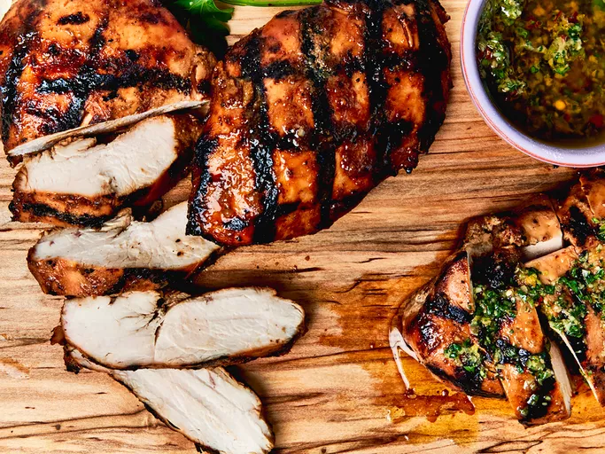

Grilled Chicken Breast

Description
The best grilled chicken breasts you'll ever make begin with a basic
marinade and end with the best technique for perfect cooking,
complete with beautifully-executed grill marks.
Ingredients
-
Olive oil: Our perfect marinade starts with olive oil,
which is essential for locking in moisture.
-
Dijon: Dijon mustard adds complex, sharp, pleasantly
tangy flavor.
- Honey: Honey lends subtle sweetness.
- Soy sauce: Soy sauce adds umami-rich saltiness.
- Lemon juice: Lemon juice brightens things up a bit.
-
Garlic: Of course, fresh garlic is necessary for the most
flavorful marinade.
-
Ground spices: Onion powder and ground ginger take the
flavor up a notch.
Steps
- Trim the chicken and pound to an even thickness.
-
Make the marinade, then marinate the chicken at least four hours
or up to overnight.
- Grill the chicken.